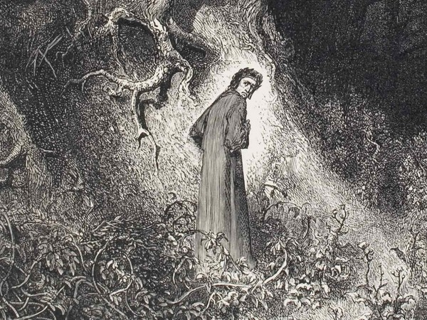

La seguente tabella mostra i luoghi, i personaggi, e i protagonisti del Canto I dell'Inferno.
| Luoghi | Selva oscura |
| Personaggi | Tre fiere (lonza, leone, lupa) |
| Protagonisti | Dante, Virgilio |
La celebre illustrazione della selva oscura di Gustave Dorè:
